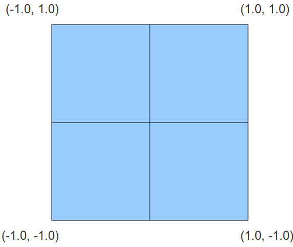

Это короткий урок. Мы просто добавим изменений к предыдущему уроку так, что бы отрисовывался треугольник.
В этом уроке мы по-прежнему не преобразуем координаты, поэтому вершины будут видны только внутри квадрата. Если смотреть с обратной оси Z, то квадрат выглядит вот так:

Точка (-1.0, -1.0) переходит в нижний левый угол окна, (-1.0, 1.0) - это верхний левый угол и так далее. Если установить точку вне этого квадрата, то треугольник будет виден не целиком.
Vector3f Vertices[3];
Vertices[0] = Vector3f(-1.0f, -1.0f, 0.0f);
Vertices[1] = Vector3f(1.0f, -1.0f, 0.0f);
Vertices[2] = Vector3f(0.0f, 1.0f, 0.0f);
Мы увеличили массив, что бы он мог содержать 3 вершины.
glDrawArrays(GL_TRIANGLES, 0, 3);
Итого произведено 2 изменения: мы рисуем треугольники вместо точек и принимаем 3 вершины вместо 1.